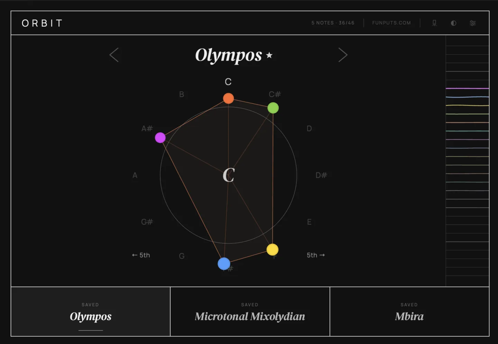
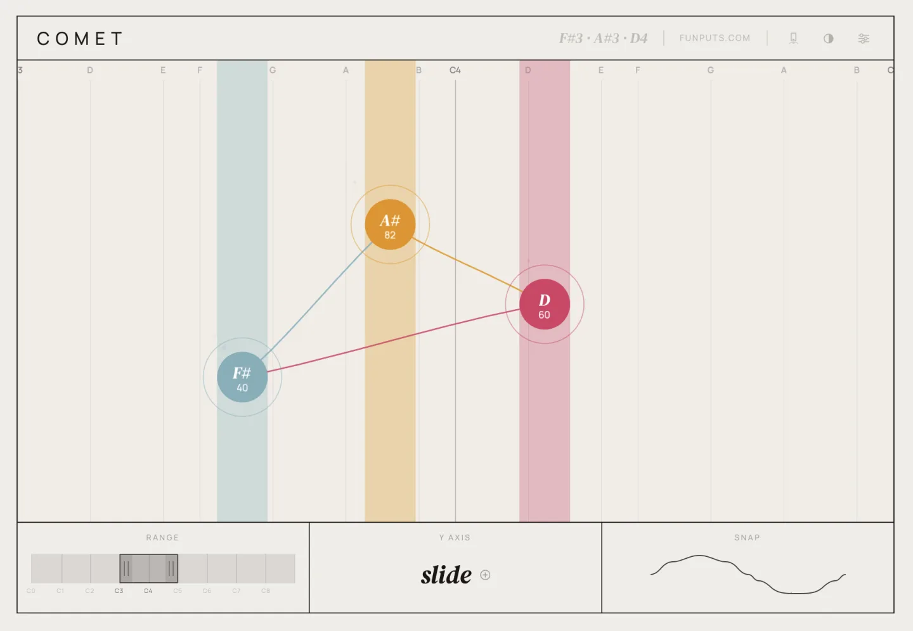
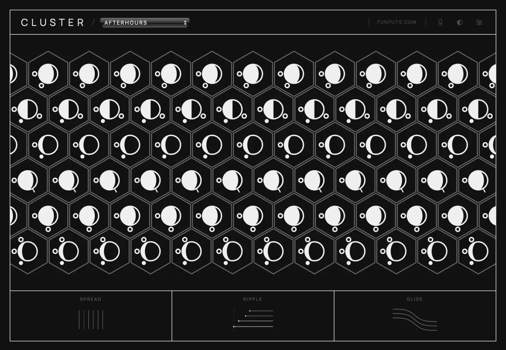

Funputs
Funputs is a suite of MIDI instruments. Most music software is built around knobs, sliders, menus, numbers and text. With Funputs, I've been exploring how much of that can be replaced with space, colour, movement and shape.
Comet is an expressive XY pad. Orbit tunes you to any scale. Cluster generates chords. Use your mouse, or pair a phone or tablet for wireless multi-touch control.
Visit Funputs ↗

